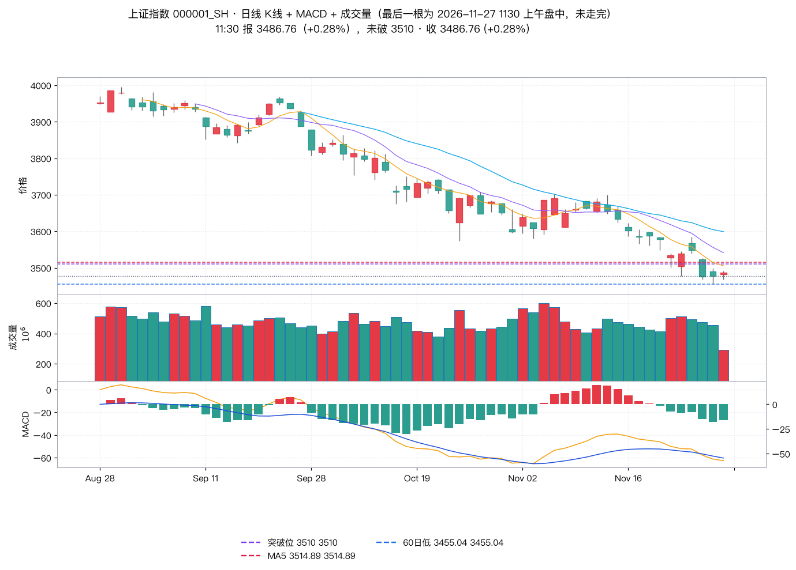
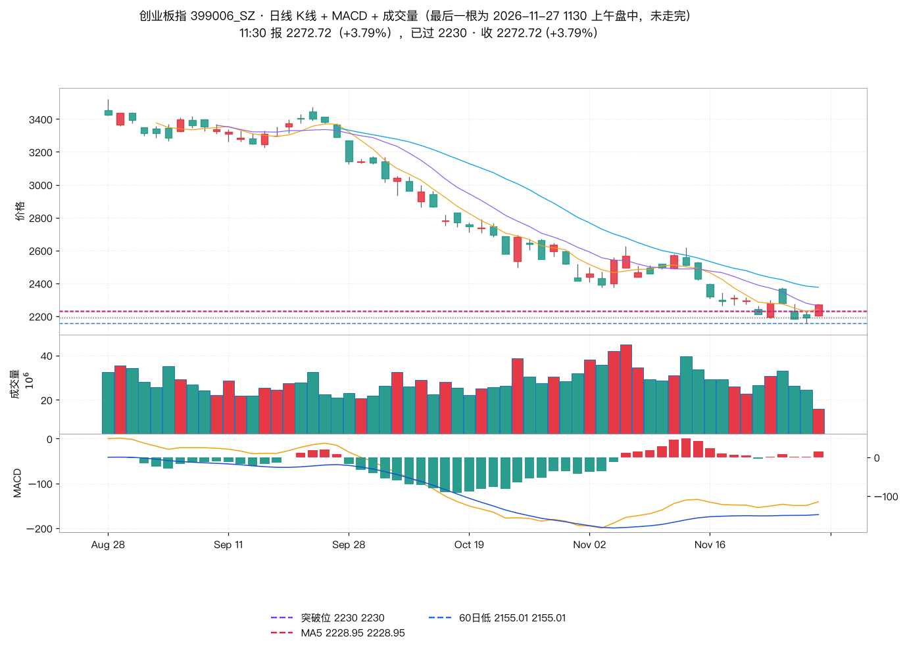
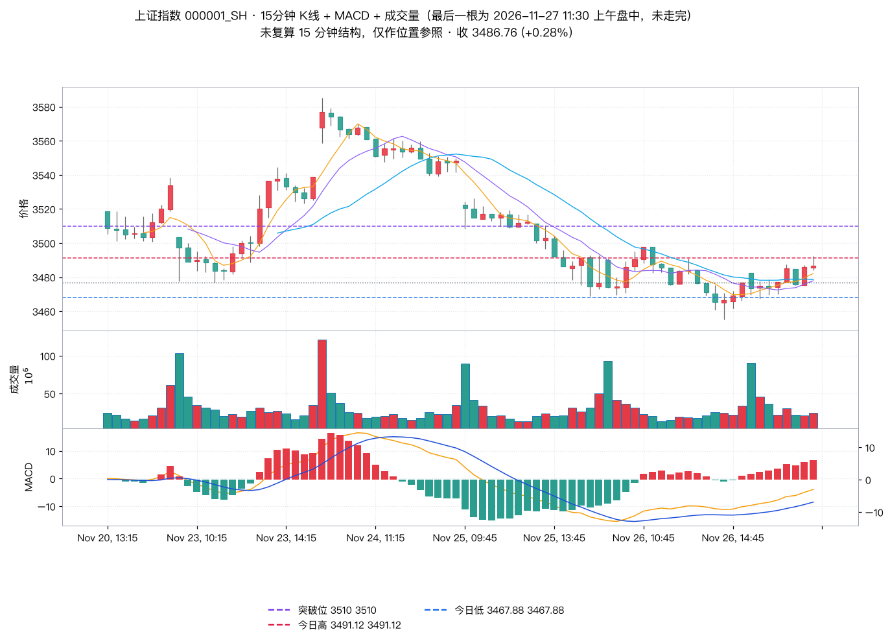
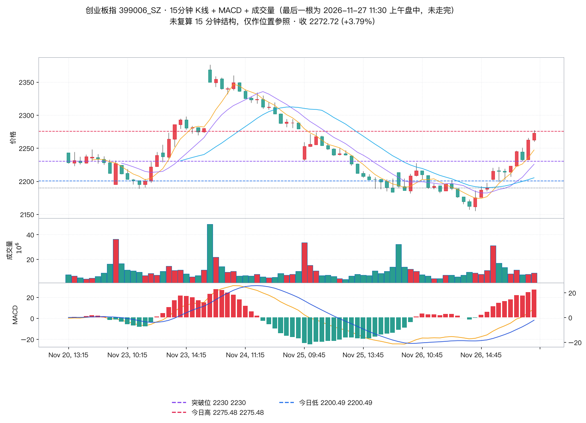
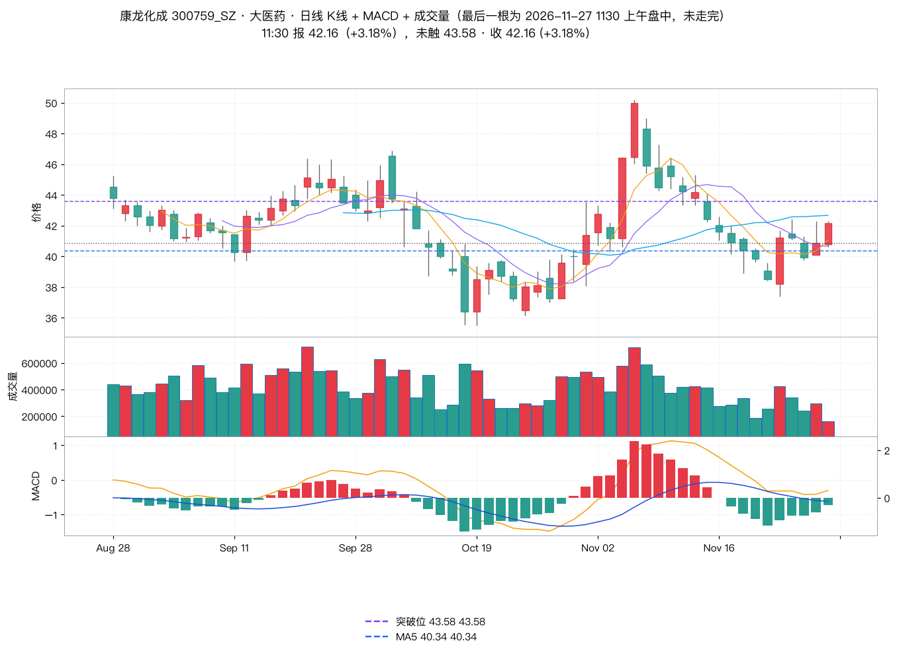
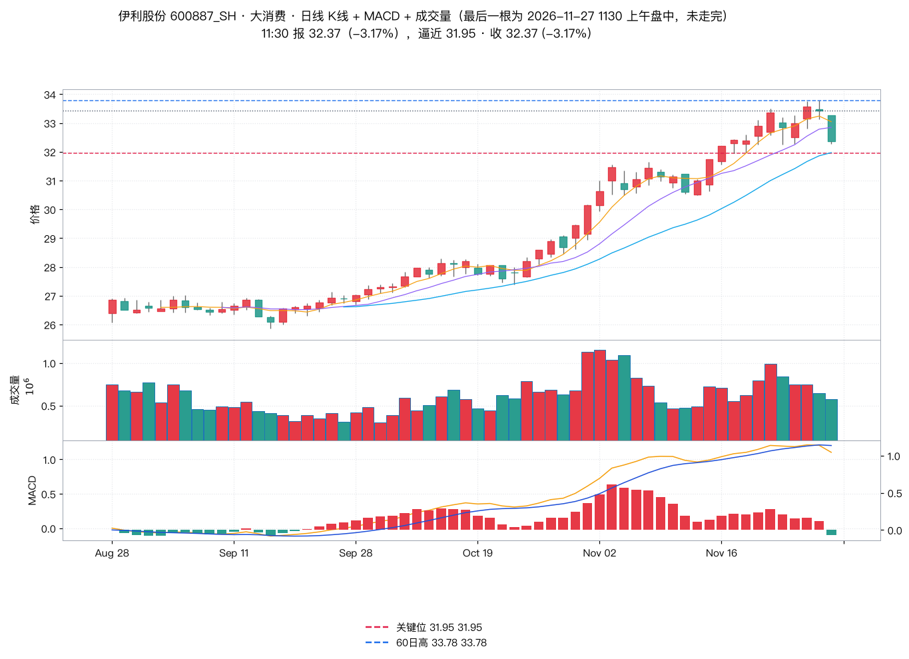
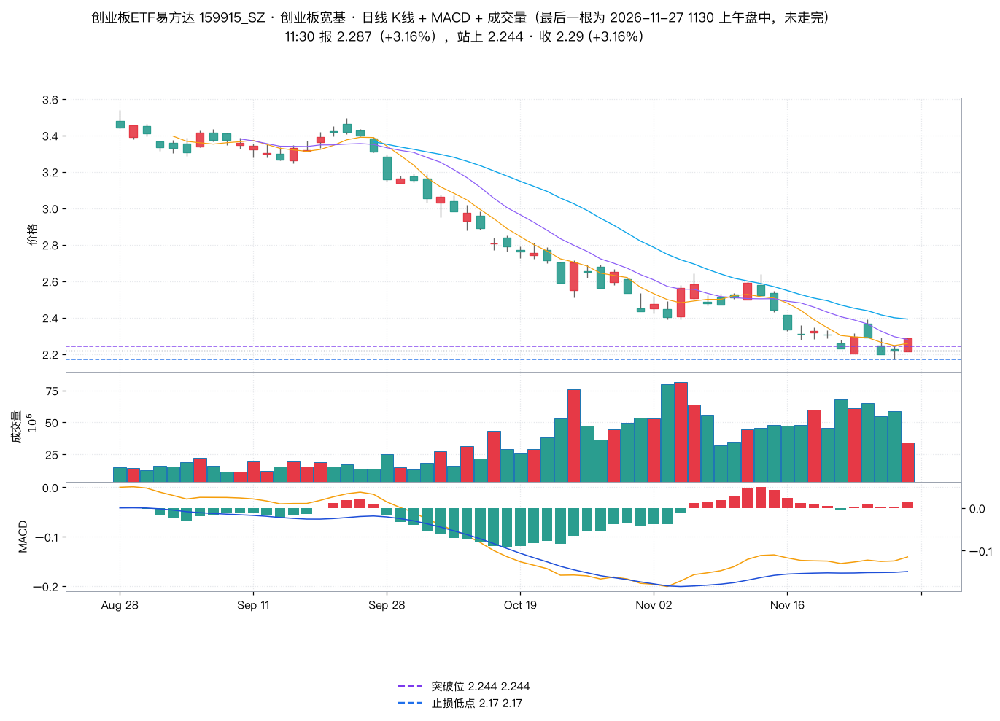
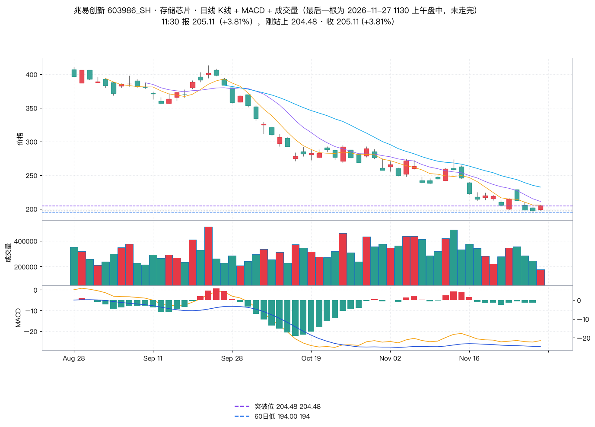
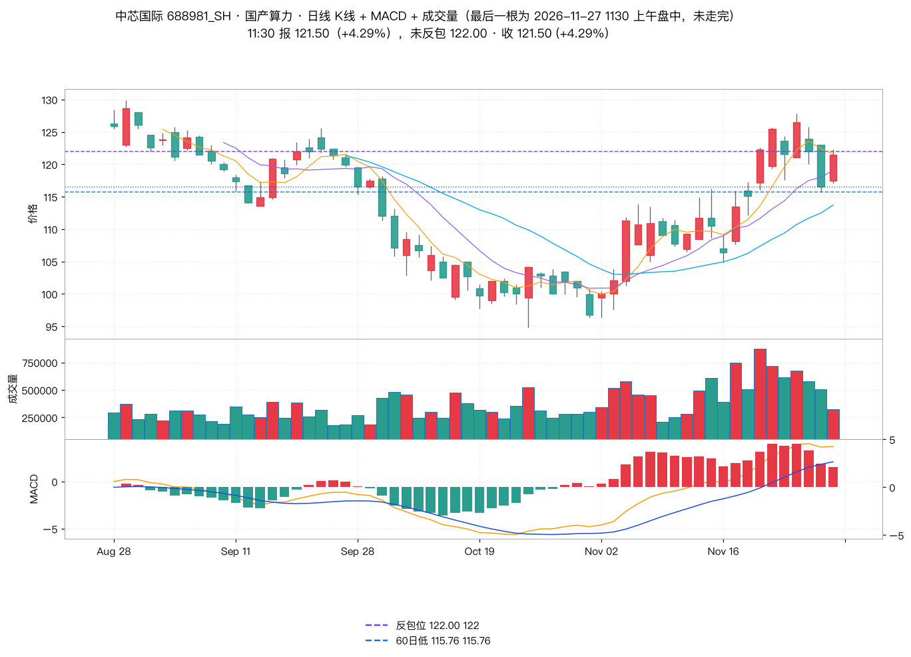
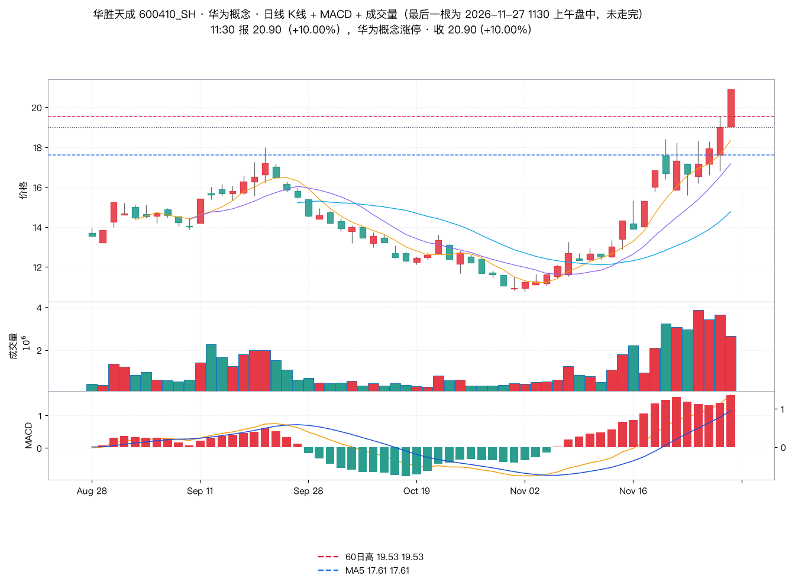

结论：分化加剧，上证滞涨、成长领涨，底部仍未确认。11:30 上证 +0.28% 报 3486.76，创业板指 +3.79% 报 2272.72，科创50 +4.43%；两市半日成交 9205 亿（昨同刻 7963 亿，+15.6%）。上证未过 3510，15 分钟三买条件不成立（老师口径）；创业板已越过 2230 与 MA5 2228.95，回落不破支撑才有二三买合并。国产算力受华为 HBM 消息强化成为核心主线，高股息/大消费集体补跌。池内 8 只仅 159915、603986 触到突破位，其余无方法买点；策略上可小仓位试探，不建议一次性重仓，仍按弱势看待。
① 「上证涨幅相对较小，创业板涨幅相对较大，科创涨幅也比较大」：11:30 上证 +0.28%、创业板指 +3.79%、科创50 +4.43%，而沪深300 +0.24%、上证50 -0.46% —— 权重弱、成长强是今天的主线。② 「上证 15 分钟没有突破 3510 点出底分型回抽的三买」：上午最高 3491.12，距 3510 差 18.88 点，收盘低于 MA5 3514.89 共 28.13 点，止跌三要件第 2 条不成立（缠论定性按老师口径）。③ 「创业板上午涨幅比较大且过掉小压力」：最高 2275.48，越过 2230 超 45.48 点、站上 MA5 2228.95；下午回落是否击穿支撑是出低点概率的关键，按老师口径不破则走二三买合并。

上证指数 11:30：报 3486.76，未破 3510，仍在 MA5 3514.89 下方

创业板指 11:30：报 2272.72，站上 MA5 2228.95，回落不破 2200.49 才有二三买合并
以下两张为 15 分钟参照图（老师口径的底分型/三买，我方未复算，仅作位置参照）。

上证 15 分钟：末根为 11-27 11:30 盘中，未复算 15 分钟结构

创业板 15 分钟：末根为 11-27 11:30 盘中，未复算 15 分钟结构
| 老师口径（11-27 午盘） | 实测（11:30） | 判定 |
|---|---|---|
| 「上证涨幅相对较小，创业板涨幅相对较大，科创涨幅也比较大」 | 上证 +0.28%、创业板指 +3.79%、科创50 +4.43%；沪深300 +0.24%、上证50 -0.46% | 一致 |
| 「15 分钟没有突破 3510 点出底分型回抽的三买」 | 最高 3491.12，距 3510 差 18.88 点；收 3486.76 低于 MA5 3514.89 共 28.13 点 | 一致 |
| 「创业板上午涨幅比较大且过掉小压力」 | 最高 2275.48，越过 2230 超 45.48 点、站上 MA5 2228.95 | 一致 |
| 「市场上午略微放量」 | 两市半日 9205.2 亿，昨同刻 7963.0 亿，+15.6% | 一致（幅度大于「略微」） |
| 「核心方向是华为概念……笼统称为国产算力」 | 华为概念 +7.52%（7/0）、国产算力 +7.81%（7/0）、半导体 +4.85%、算力/CPO +5.73%；涨停池 IT 服务 16 只 | 一致 |
| 「该方向很多股票涨势非常急」 | 软通动力 +16.97%、华丰科技 +15.91%、拓维信息 +10.02%、深南电路与华胜天成 +10.00% | 一致 |
| 「高股息品种下跌：银行、保险、机场，包括大消费」 | 银行 -1.74%（0/5）、保险 -1.14%（0/5）、高股息红利 -2.38%（0/7）；上海机场 -2.13%、中国中免 -0.75%、伊利股份 -3.17% | 一致 |
| 「截至昨天没有一、二类热点，今天收盘后国产算力可能会上榜」 | 无热点榜数据源，榜单无法核验；旁证：涨停 92 只中计算机/电子/通信/IT 占 43 只，申万计算机 +5.54% 居首 | 无法核验 |
① 国产算力是今天唯一进攻主线：华为概念 +7.52%、国产算力 +7.81% 两篮子 7 只全涨，半导体 +4.85%、算力/CPO +5.73% 跟进，申万计算机 +5.54% 居首。② 涨势很急，追高风险高：软通动力 +16.97%、华丰科技 +15.91%，13 只 2 连板、5 只 3 板以上 —— 老师提醒的「盘中拉升时追涨」正落在这个位置。③ 跷跷板另一端全面补跌：银行 0/5、保险 0/5、高股息红利 0/7 全线下跌，机场与大消费龙头同步回落（上海机场 -2.13%、海尔智家 -4.12%、伊利股份 -3.17%）；申万食品饮料 -0.07% 是唯一收绿行业。
| 标的 | 11:30 | 老师口径 | 关键位 / 触发条件 | 实测印证 | 动作 |
|---|---|---|---|---|---|
| 康龙化成 300759（大医药） | 42.16 +3.18% | 中线 · 结构修复较强，等突破 43.58 出三买 | 突破 43.58 | 高 42.33 未触（差 1.25 元），站上 MA5 40.34 | 等 |
| 瑞芯微 603893（端侧AI） | 201.68 +4.79% | 中线 · 修复不理想，仍处弱势 | 等内部强势中枢 | 已站回 MA5 196.19（超 2.80%） | 不操作（见偏差） |
| 海天瑞声 688787（机器人） | 95.00 +2.93% | 中线 · 弱势，不操作 | 等走势修复 | 收 95.00 仍低于 MA5 96.93（差 1.93 元） | 不操作 |
| 伊利股份 600887（大消费） | 32.37 -3.17% | 中线 · 不操作，盯 31.95 得失 | 跌破 31.95 = 顶背驰 | 最低 32.27 未破（差 0.32 元） | 等（持有者盯盘） |
| 创业板ETF 159915（宽基） | 2.287 +3.16% | 中线 · 破 2.244 后观察三买可轻仓；止损 2.17 | 2.244 / 止损 2.17 | 高 2.293 已破 2.244；止损位 2.17 ＝ 11/26 日线低，今日最低 2.213 未破 | 等三买成立 |
| 中国船舶 600150（船舶） | 34.10 -1.45% | 中线 · 走势没止跌 | 无买点 | 收 34.10 低于 MA5 34.73，11/26 破位未修复 | 不操作 |
| 中芯国际 688981（国产算力） | 121.50 +4.29% | 中线 · 等日线有力度底分型，估计满足也得到周一；不建议追涨 | 反包 122.00 | 盘中最高 122.41 一度越过，11:30 收 121.50 仍差 0.50 元 | 等 |
| 兆易创新 603986（存储芯片） | 205.11 +3.81% | 短线 · 站上 204.48 后出三买 | 突破 204.48 | 高 206.00 已破，收 205.11 仍低于 MA5 205.77 | 等三买 |
「无方法买点」为老师原文口径，不改写成可试探。

康龙化成 11:30：报 42.16，未触 43.58 突破位

伊利股份 11:30：报 32.37，距 31.95 仅 0.32 元

创业板ETF 11:30：报 2.287，已破 2.244，止损 2.17 未破

兆易创新 11:30：报 205.11，刚站上 204.48，仍低于 MA5

中芯国际 11:30：报 121.50，盘中越过 122.00 后回落

华胜天成 11:30：报 20.90 涨停，华为概念主线龙头
① 上证：能否站上 3510（上午最高 3491.12，差 18.88 点）；未站上前「15 分钟底分型回抽三买」不成立（老师口径），底部无法判断。② 创业板指：2272.72 之上能否守住并回抽不破上午低 2200.49；不破则二三买合并、阶段性低点概率上升（老师口径）。③ 159915：站稳 2.244 且回抽不破 → 三买成立可轻仓；跌破 2.17（11/26 日线低）止损。④ 量能与接力：全天能否到 1.6 万亿以上（上午 9205 亿）；昨日 65 只涨停中今日已跌 23 只，接力仍弱。⑤ 高股息止跌：银行 -1.74%、保险 -1.14% 之后能否在回调中出止跌结构（老师口径：回调后找止跌机会，并比较谁更抗跌）。
| 老师口径 | 实测 | 判定 |
|---|---|---|
| 「现在市场整体仍非常弱」 | 11:30 涨 4320 / 跌 811、涨停 92、跌停 0、跌超 5% 仅 49 只，广度是普涨；但昨日 65 只涨停今日已跌 23 只 | 口径差异（老师的「弱」指上证结构未确认） |
| 「瑞芯微和海天瑞声……仍处于弱势，因此不操作」 | 瑞芯微 11:30 +4.79% 收 201.68，已站回 MA5 196.19；海天瑞声 +2.93% 仍低于 MA5 96.93 共 1.93 元 | 部分不成立（瑞芯微按日线口径已转强） |
| 「中芯国际今天完全上去反包的可能性不大」 | 盘中最高 122.41 一度越过 11/25 收盘 122.00，11:30 收 121.50 仍差 0.50 元未反包 | 部分成立（盘中已越位） |
| 「市场上午略微放量」 | 半日 +15.6%（9205.2 亿 vs 7963.0 亿），幅度明显大于「略微」 | 口径差异 |
其余判据当日一致 ✓：上证未破 3510、创业板过小压力、华为概念与国产算力主线、涨势很急、高股息与机场消费补跌、伊利 31.95 未破、中国船舶未止跌。
来源：都业华《高级班》2026-11-27 午盘，执业编号 A0400626100004。仅供参考，不作为买卖依据，风险自担。投资有风险，入市需谨慎。
口径：日线取 Tushare 前复权（MA5 / 60 日高低同源），盘中档为 11:30 腾讯分时切片接成的未走完 K 线；成交额＝沪市 000001.SH ＋ 深证综指 399106.SZ 同时点口径；涨跌家数取新浪全市场快照，涨跌停用东财池；板块用自建篮子与申万 L1。缠论定性按老师口径引用，未复算。